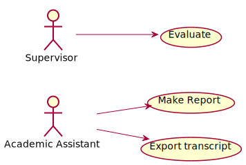

Academic Evaluation¶
This section aims to describe basic activities relating to the evaluation. In order to build the academic integration, we let supervisors do evaluation. In addition, academic assistant could also track student progress. Overall, the use cases defined here are the functional requirements for Developing Utilities for Academic Management.

Evaluate¶
This use case allows Supervisor to evaluate the project. Its flow of events can be depicted as follows:
Supervisor requests to evaluate the project.
System receives the request provide an evaluation and comment.
Supervisor provides evaluation with comments.
System receives the data and terminate the project.
Make Report¶
This use case allows Academic Assistant to make reports based on the result of the project. Its flow of events can be depicted as follows:
Academic Assistant requests to make a report.
System receives the request and displays the result of the project.
Academic Assistant requests to make a hard copy.
System responds a document file format of the report.
Academic Assistant downloads the file for printing purpose later.
Export Transcript¶
This use case allows Academic Assistant to export transcript based on the evaluation of Supervisor. Its flow of events can be depicted as follows:
Academic Assistant requests to export the transcript.
System receives the request and displays the evaluation of Supervisor.
Academic Assistant requests to make a hard copy.
System responses by a document file format of the transcript.
Academic Assistant downloads the file for printing purpose later.